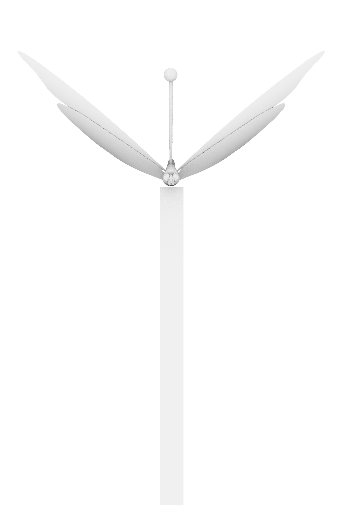
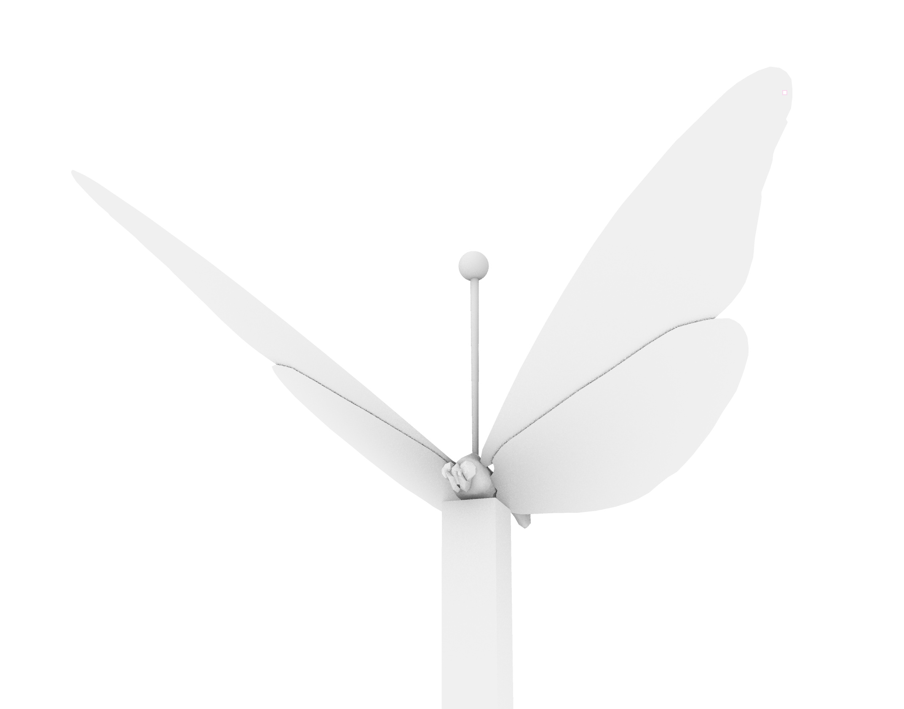
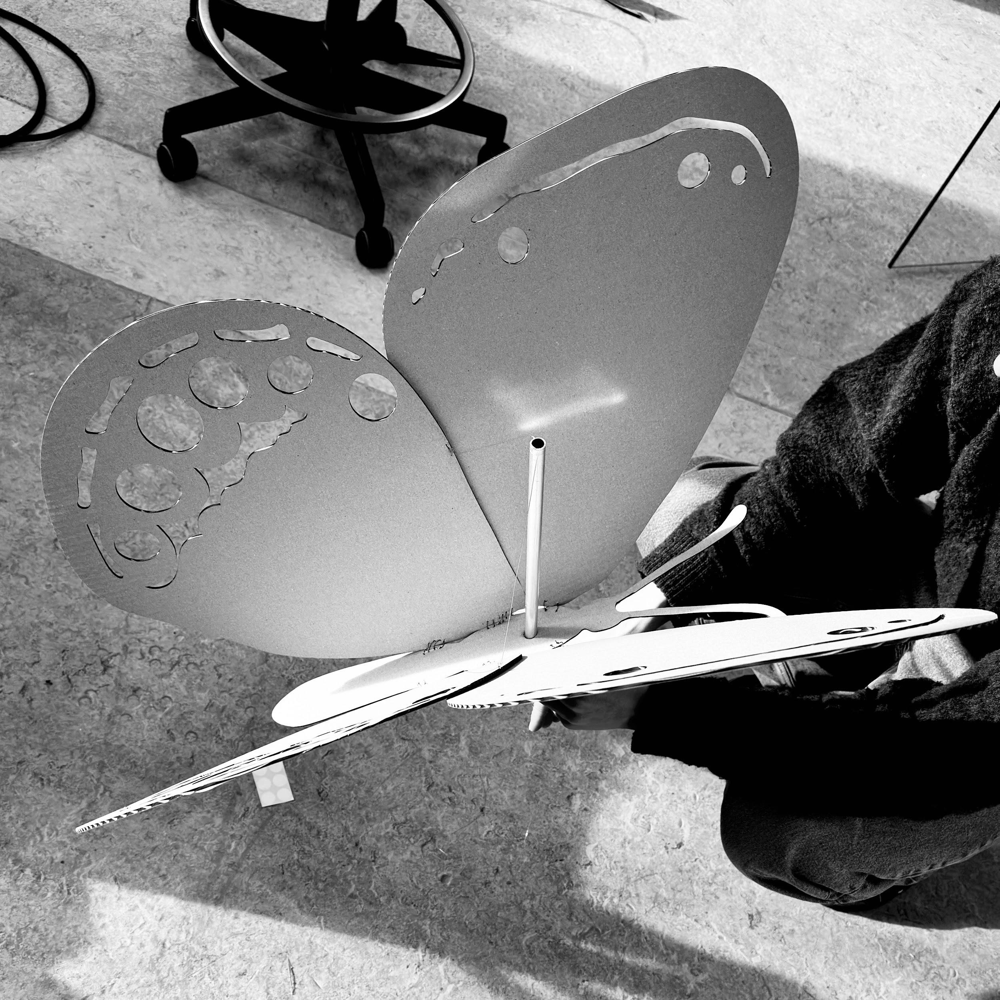
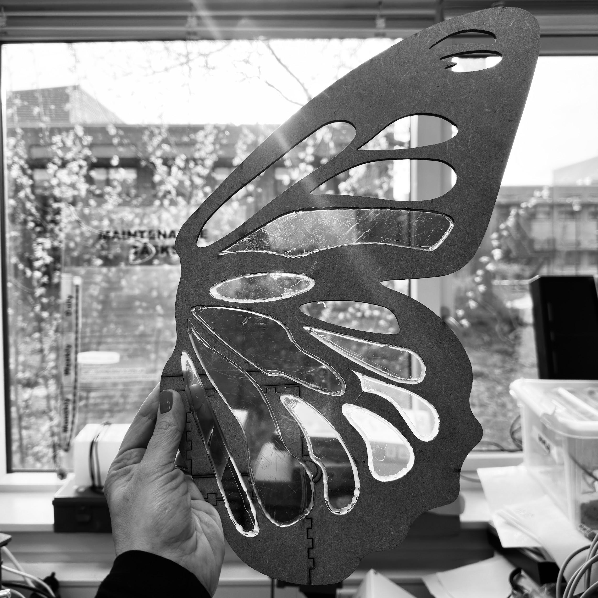
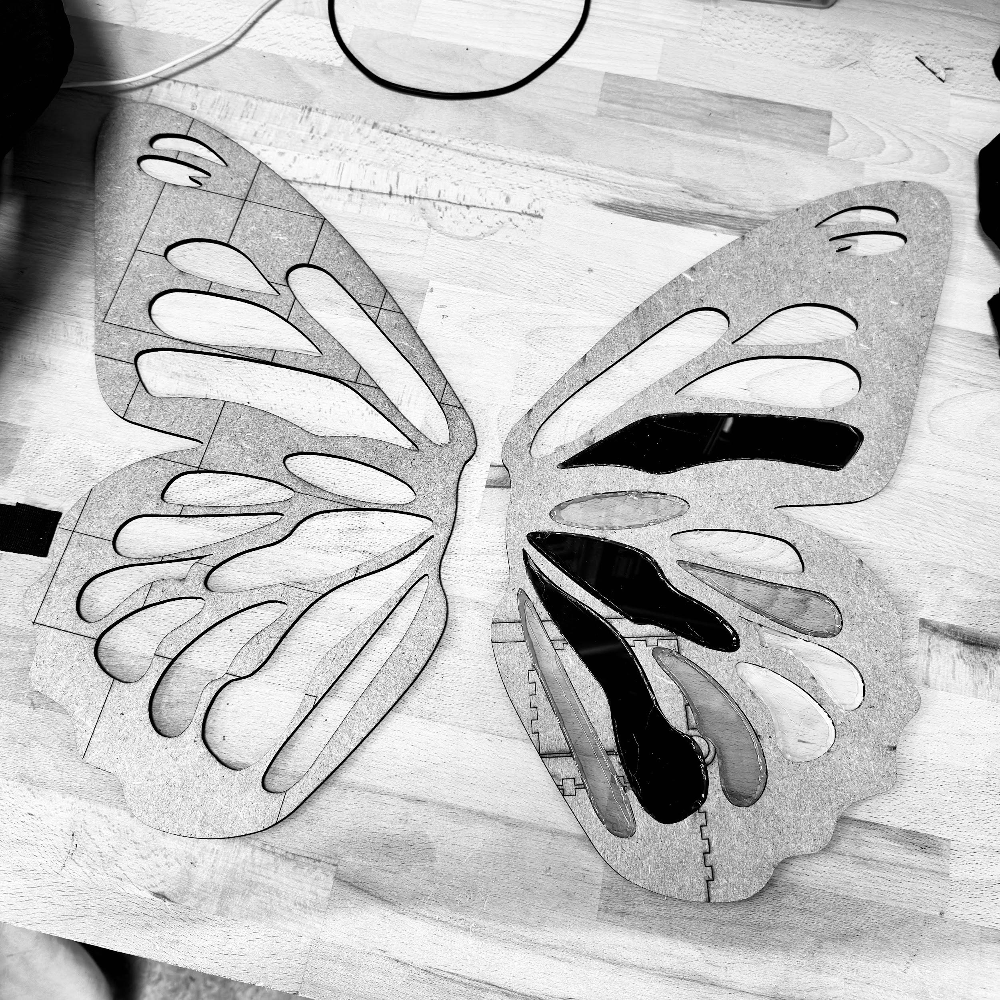
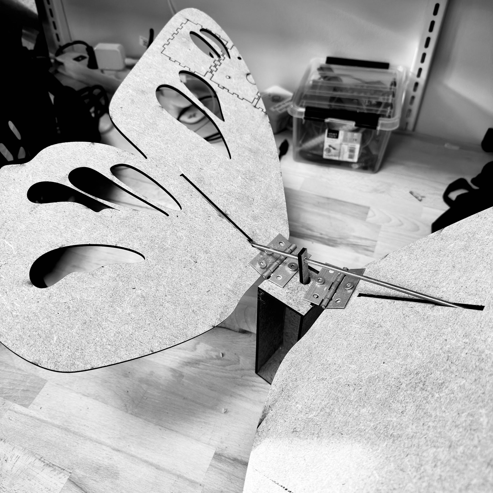

What Once Flew
A kinetic sculpture for Roskilde Festival 2026, built around a butterfly that went extinct the same year the festival began.

In this group, we're fascinated by how skilled nature is at designing beautiful things — and how skilled we humans are at destroying them.
Roskilde Festival began in 1971. That same year, a butterfly called the Herorandøje went extinct. And we kept going. For the last 55 years we've lived our lives without giving much thought to the fact that it hasn't been part of our world — like so many other species lost in that same period.
This year, we're bringing it back as a "creature of the forest": a strange, utopian, unknown animal. Not because it chose to become that, but because we made it that way.

We've imagined it as a hybrid creature, built from metal, acrylic, or a combination of both. Its body should feel both fragile and unnatural — as if it has been brought back through human hands rather than through nature itself. The materials make it clear that this isn't just a butterfly, but something reconstructed and transformed.
When activated by an audience, it doesn't fly gracefully. Its movement is deliberately strange, heavy, and a little uncanny. Instead of mirroring the lightness of a living butterfly, it moves like a constructed version of life — as if something extinct is trying to return through the materials we've given it.
We want to start a conversation with the audience about how complex and layered "sustainability" really is, and how far into an urgent mission we already are — the mission of finding balance between people and nature. Our hope is that people leave with a heightened awareness of the resources we consume, and the impact we have, every day, on our shared planet and everything living on it.

Prototyping the movement. We've found an old actuator, which we're currently using to prototype how the creature could move. In parallel, we're developing a mechanical, power-free alternative — a hand crank that lets the visitor make it fly themselves.


Material experiments. Alongside the mechanism, we're running material experiments for the wings — especially looking at how to use light meaningfully, letting it reflect through the material, and finding a material strong enough to carry the wing structure through good weather and bad, while still being made from reused material.

A collaboration between Kristoffer Hygum Nielsen, Frederik Göbel, and Rikke van Hauen — made for RF x RUC '26.
← Back to Portfolio